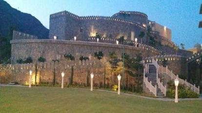
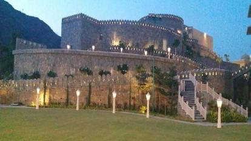

HISTORY
Kumbhalgarh is a historically significant fortress located in the Rajsamand district of Rajasthan, India. Its history dates back to the 15th century when it was constructed by Rana Kumbha, a ruler of the Mewar region of Rajasthan. The fortress was built during the 15th century to serve as a defensive stronghold against invasions from neighboring states such as the Mughals and the Marathas.
Rana Kumbha, who ruled the Mewar region from 1433 to 1468, initiated the construction of Kumbhalgarh in the 15th century. The fortress was strategically located atop the Aravalli Range, providing a commanding view of the surrounding area. It was built over a period of several years, with extensive walls and bastions to fortify the structure


 
